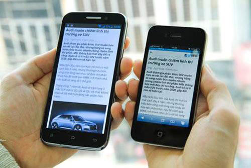
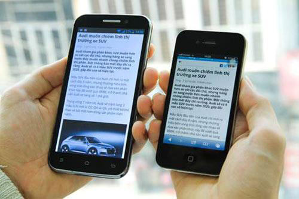

A few examples...


...and here it is on the iPhone 4 and on the iPhone6
Facebook Instant Articles : a mobile publishing format that enables news publishers to distribute to the Facebook iPhone app. Designed to load 10x faster than a typical article on a mobile device.
...and here it is on the iPhone 4 and on the iPhone6
Ready to see the provided boilerplate? Click here